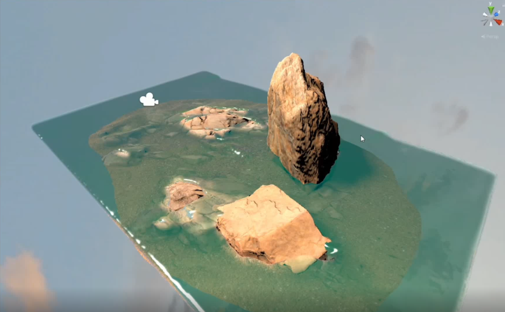
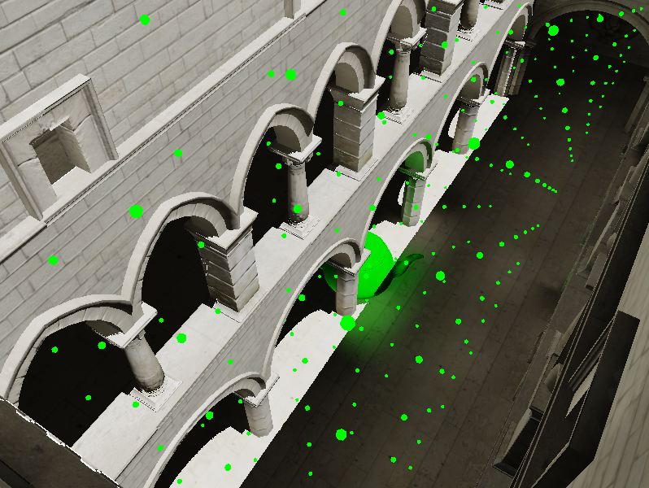

|
I am a Ph.D. student at the Chair of Computer Graphics and Visualization at Technical University of Munich (TUM), advised by Prof. Dr. Rüdiger Westermann. I received my Bachelor's and Master's degree in Computer Science at Sichuan University (SCU), advised by Prof. Dr. Yanci Zhang. I also spent time at State Key Lab of CAD&CG, Zhejiang University (ZJU) and TUM's Chair of Aerodynamics and Fluid Mechanics. Goal: Recreate the real world! Key Words: Computer Graphics, Computer Vision, Neural Rendering, Physically Based Simulation, Deep Learning. Interests: During my Masters, my research was devoted to physically based simulations; now, I explore neural rendering techniques (NeRF/3DGS etc.) at TUM. I am interested in a wide range of topics under the topic of Computer Graphics/Vision. Email: junwei.jiang97 [AT] outlook.com |

|
||
News
|
Publications |
|
|
A Second-Order Explicit Pressure Projection Method for Eulerian Fluid Simulation
Junwei Jiang, Xiangda Shen, Yuning Gong, Zeng Fan, Yanli Liu, Guanyu Xing, Xiaohua Ren*, Yanci Zhang* ACMSIGGRAPH/ Eurographics Symposium on Computer Animation 2022/ Computer Graphics Forum pdf | abstract | video | code | bibtex |
|
|
Parallel Real-Time Bone Driven Secondary Deformation Based on Clique Coloring
Yusong Fu, Junwei Jiang, Yina Lv, Yanci Zhang* China Computer Aided Design and Computer Graphics (CAD/CG 2021) abstract | simple video |
Projects |
|

|
Large Scale Real-Time Fluid Simulation
video A NetEase pre-research project, which uses mixed Lagrangian particles, Eulerian grids and shallow water equation height fields to achieve a compromise between performance and accuracy. |
|
|
Real-Time Remote Assistance System Based on Hololens
Develop a remote assistance system similar to Microsoft Dynamics 365. With the help of Hololens, guidance experts in different places can share the screen with front-line engineers remotely and in real time, and give instructions on the screen to achieve the function of remote assistance. |
|

|
Real-Time Dynamic Diffuse Global Illumination Based on Light Field Probe
Record the light field information of the scene by light field probes. Use the specially designed algorithm to query and calculate the multiple diffuse reflections. |
|
Website template from here. |